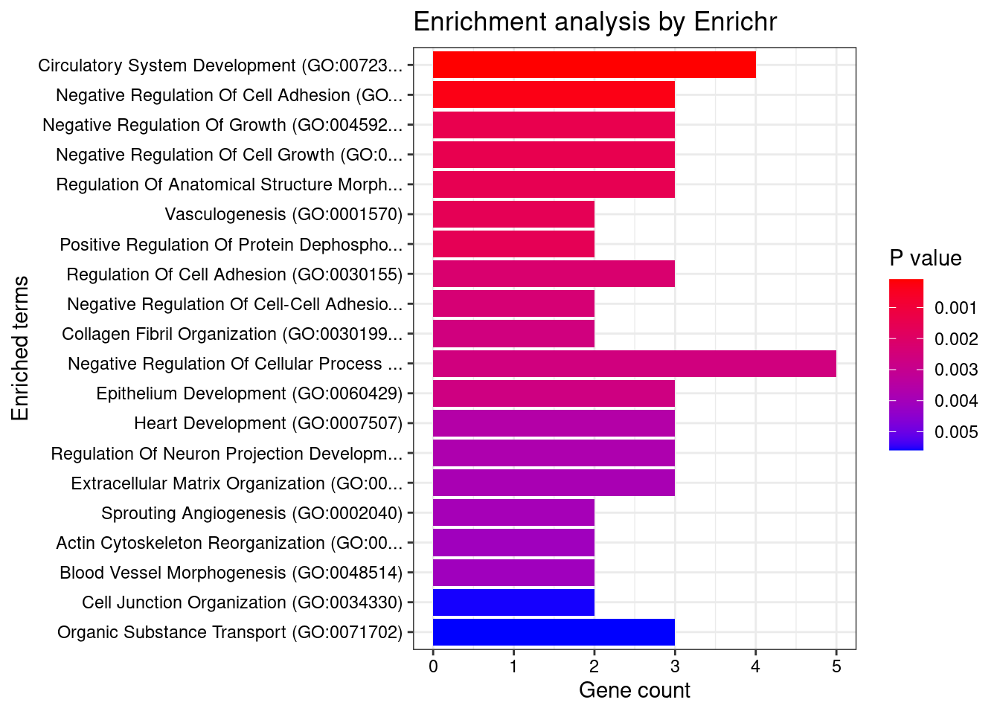

CAD cTWAS (no LD)
Xizhi Xu
10/21/2024
Last updated: 2024-10-25
Checks: 7 0
Knit directory: CAD_cTWAS/
This reproducible R Markdown analysis was created with workflowr (version 1.7.1). The Checks tab describes the reproducibility checks that were applied when the results were created. The Past versions tab lists the development history.
Great! Since the R Markdown file has been committed to the Git repository, you know the exact version of the code that produced these results.
Great job! The global environment was empty. Objects defined in the global environment can affect the analysis in your R Markdown file in unknown ways. For reproduciblity it’s best to always run the code in an empty environment.
The command set.seed(20241004) was run prior to running the code in the R Markdown file. Setting a seed ensures that any results that rely on randomness, e.g. subsampling or permutations, are reproducible.
Great job! Recording the operating system, R version, and package versions is critical for reproducibility.
Nice! There were no cached chunks for this analysis, so you can be confident that you successfully produced the results during this run.
Great job! Using relative paths to the files within your workflowr project makes it easier to run your code on other machines.
Great! You are using Git for version control. Tracking code development and connecting the code version to the results is critical for reproducibility.
The results in this page were generated with repository version 42784da. See the Past versions tab to see a history of the changes made to the R Markdown and HTML files.
Note that you need to be careful to ensure that all relevant files for the analysis have been committed to Git prior to generating the results (you can use wflow_publish or wflow_git_commit). workflowr only checks the R Markdown file, but you know if there are other scripts or data files that it depends on. Below is the status of the Git repository when the results were generated:
Ignored files:
Ignored: .Rhistory
Untracked files:
Untracked: all_artery_weights.RData
Untracked: ctwas_res_all.RData
Untracked: ctwas_res_noLD.RData
Untracked: res.RData
Untracked: weights.RData
Untracked: weights_group.RData
Untracked: z_snp.RData
Note that any generated files, e.g. HTML, png, CSS, etc., are not included in this status report because it is ok for generated content to have uncommitted changes.
These are the previous versions of the repository in which changes were made to the R Markdown (analysis/CAD_cTWAS_noLD.Rmd) and HTML (docs/CAD_cTWAS_noLD.html) files. If you’ve configured a remote Git repository (see ?wflow_git_remote), click on the hyperlinks in the table below to view the files as they were in that past version.
| File | Version | Author | Date | Message |
|---|---|---|---|---|
| Rmd | 42784da | Xizhi | 2024-10-25 | Update CAD cTWAS with all tissues |
| html | fe8c98f | Xizhi | 2024-10-21 | Build site. |
| Rmd | 652b6f5 | Xizhi | 2024-10-21 | Update CAD cTWAS with all tissues |
| html | a35e278 | Xizhi | 2024-10-15 | Build site. |
| Rmd | 1d8cba9 | Xizhi | 2024-10-15 | Update CAD cTWAS |
| html | 5b1f986 | Xizhi | 2024-10-09 | Build site. |
| Rmd | 77e1b20 | Xizhi | 2024-10-09 | Update my first analysis |
| html | 2c5fce1 | Xizhi | 2024-10-04 | Build site. |
| Rmd | 7eab91e | Xizhi | 2024-10-04 | Add my first analysis |
Version Notes
This is the no LD version of cTWAS. The prediction model includes tissues “Aorta”, “Coronary”, “Tibial” with their expression and splicing. The genome build of prediction model and reference was HG38.
Set up
Load the required packages.
### Set up
# setwd("xizhi_xin_midway3/cTWAS_2024")
library(data.table)
library(ctwas)
library(RSQLite)
library(EnsDb.Hsapiens.v86)
library(ggplot2)
library(workflowr)
library(enrichR)Prepare the input: GWAS summary statistics, Reference (region info, SNP info), Prediction model (weights)
GWAS Sum Stats
The CAD summary statistics data I used was accessed from website: https://www.nature.com/articles/s41588-022-01233-6 . I filtered the original data to maintain the MAF between (0.01, 0.99). The sample size was 1165690.
gwas_data <- fread("GCST90132314_buildGRCh37.tsv", sep = "\t")
# Filter to remain the variants with MAF (0.01, 0.99)
gwas_filter <- gwas_data[gwas_data$effect_allele_frequency > 0.01, ]
gwas_filter <- gwas_filter[gwas_filter$effect_allele_frequency < 0.99, ]
gwas_filter$z <- gwas_filter$beta / gwas_filter$standard_error
gwas_map <- gwas_filter[, c("chromosome", "base_pair_location", "z")]
gwas_n <- 1165690Reference
Here I got the region info from the package cTWAS. SNP info was also accessed from reference panel of cTWAS website. Another thing to notice: genome build needs to be matched. (Here: GRCh38 / hg38)
# Region info
region_file <- system.file("extdata/ldetect", "EUR.b38.ldetect.regions.RDS", package = "ctwas")
region_info <- readRDS(region_file)
# SNP info
ref_snp_info <- fread("ukb_b38_0.1_var_info.Rvar", sep = "\t") # 9309375
class(ref_snp_info) <- "data.frame"
res <- create_snp_map(region_info, ref_snp_info, ncore = 6)
region_info <- res$region_info
snp_map <- res$snp_map
head(region_info)
ref_data <- read.table("ukb_b37_0.1_var_info.Rvar", header = TRUE, sep = "\t")
colnames(gwas_map)[colnames(gwas_map) == "base_pair_location"] <- "pos"
colnames(gwas_map)[colnames(gwas_map) == "chromosome"] <- "chrom"
head(gwas_map)
# Merge to find rsID based on positions
z_snp <- merge(gwas_map, ref_data, by = c("pos", "chrom")) # 9155485
z_snp <- z_snp[, c("id", "alt", "ref", "z")]
colnames(z_snp)[colnames(z_snp) == "alt"] <- "A1"
colnames(z_snp)[colnames(z_snp) == "ref"] <- "A2"
head(z_snp)Harmonize GWAS summary statistics:
# Harmonize GWAS summary statistics
load("z_snp.RData")
load("res.RData")
region_info <- res$region_info
snp_map <- res$snp_map
z_snp <- preprocess_z_snp(z_snp, snp_map)2024-10-25 11:51:06 INFO::Preprocessing z_snp...
2024-10-25 11:51:16 INFO::z_snp has 9155485 variants in total
2024-10-25 11:51:20 INFO::9142078 variants left after filtering by the reference SNPs.
2024-10-25 11:51:21 INFO::Remove 14480 multiallelic variants
2024-10-25 11:51:26 INFO::Harmonize 9127598 variants between GWAS and the reference
2024-10-25 11:51:42 INFO::Flip signs for 1272047 (13.94%) variants
2024-10-25 11:51:42 INFO::Remove 1272047 strand ambiguous variants
2024-10-25 11:51:42 INFO::7855551 variants left after preprocessing and harmonization.dim(z_snp)[1] 7855551 4Prediction model
The prediction model was accessed from GTEx. The molecular traits were expression and splicing. Here, I included all tissues related to artery: Aorta, Coronary, Tibial.
The number of each group:
load("weights_group.RData")
print(weights_group) Aorta|expression Aorta|splicing Coronary|expression Coronary|splicing
10403 29657 9496 29290
Tibial|expression Tibial|splicing SNP
10600 30075 7851620 # Artery_Aorta
artery_aorta_eqtl <- "mashr_eqtl/eqtl/mashr/mashr_Artery_Aorta.db"
artery_aorta_sqtl <- "mashr_sqtl/sqtl/mashr/mashr_Artery_Aorta.db"
artery_aorta_eqtl_weights <- preprocess_weights(artery_aorta_eqtl,
region_info,
z_snp$id,
snp_map,
type = "expression",
context = "Aorta")
artery_aorta_sqtl_weights <- preprocess_weights(artery_aorta_sqtl,
region_info,
z_snp$id,
snp_map,
type = "splicing",
context = "Aorta")
# Artery_Coronary
artery_coronary_eqtl <- "mashr_eqtl/eqtl/mashr/mashr_Artery_Coronary.db"
artery_coronary_sqtl <- "mashr_sqtl/sqtl/mashr/mashr_Artery_Coronary.db"
artery_coronary_eqtl_weights <- preprocess_weights(artery_coronary_eqtl,
region_info,
z_snp$id,
snp_map,
type = "expression",
context = "Coronary")
artery_coronary_sqtl_weights <- preprocess_weights(artery_coronary_sqtl,
region_info,
z_snp$id,
snp_map,
type = "splicing",
context = "Coronary")
# Artery_Tibial
artery_tibial_eqtl <- "mashr_eqtl/eqtl/mashr/mashr_Artery_Tibial.db"
artery_tibial_eqtl_weights <- preprocess_weights(artery_tibial_eqtl,
region_info,
z_snp$id,
snp_map,
type = "expression",
context = "Tibial")
artery_tibial_sqtl <- "mashr_sqtl/sqtl/mashr/mashr_Artery_Tibial.db"
artery_tibial_sqtl_weights <- preprocess_weights(artery_tibial_sqtl,
region_info,
z_snp$id,
snp_map,
type = "splicing",
context = "Tibial")
weights <- c(artery_aorta_eqtl_weights, artery_aorta_sqtl_weights, artery_coronary_eqtl_weights,
artery_coronary_sqtl_weights, artery_tibial_eqtl_weights, artery_tibial_sqtl_weights)Run cTWAS
After all the input files ready, run the cTWAS.
# # ctwas_res <- ctwas_sumstats_noLD(z_snp,
# artery,
# region_info,
# snp_map,
# thin = 0.1,
# ncore = 6)
load("all_artery_weights.RData")
load("ctwas_res_all.RData")
z_gene <- ctwas_res$z_gene
param <- ctwas_res$param
finemap_res <- ctwas_res$finemap_res
susie_alpha_res <- ctwas_res$susie_alpha_res
boundary_genes <- ctwas_res$boundary_genes
region_data <- ctwas_res$region_data
screen_res <- ctwas_res$screen_resExplore and interpret the results
Create the convergence plots:
gwas_n <- 1165690
make_convergence_plots(param, gwas_n)
These plots showed the estimated prior inclusion probability, prior effect size variance, enrichment and proportion of variance explained (PVE) over the iterations of parameter estimation.
Estimate the parameters:
ctwas_parameters <- summarize_param(param, gwas_n)
ctwas_parameters$group_size
Aorta|expression Aorta|splicing Coronary|expression Coronary|splicing
10403 29657 9496 29290
Tibial|expression Tibial|splicing SNP
10600 30075 7851620
$group_prior
Aorta|expression Aorta|splicing Coronary|expression Coronary|splicing
0.0078530848 0.0018636328 0.0015952678 0.0041753694
Tibial|expression Tibial|splicing SNP
0.0056263115 0.0022117083 0.0001886633
$group_prior_var
Aorta|expression Aorta|splicing Coronary|expression Coronary|splicing
36.70085 12.33802 36.70085 12.33802
Tibial|expression Tibial|splicing SNP
36.70085 12.33802 10.26662
$enrichment
Aorta|expression Aorta|splicing Coronary|expression Coronary|splicing
41.624862 9.878087 8.455633 22.131325
Tibial|expression Tibial|splicing
29.821968 11.723043
$group_pve
Aorta|expression Aorta|splicing Coronary|expression Coronary|splicing
0.0025721242 0.0005849922 0.0004769439 0.0012944247
Tibial|expression Tibial|splicing SNP
0.0018776848 0.0007040378 0.0130464165
$total_pve
[1] 0.02055662
$prop_heritability
Aorta|expression Aorta|splicing Coronary|expression Coronary|splicing
0.12512386 0.02845760 0.02320147 0.06296874
Tibial|expression Tibial|splicing SNP
0.09134208 0.03424871 0.63465754 Create the pie chart to see the heritability:
ctwas_parameters$prop_heritability contained the proportion of heritability mediated by molecular traits and variants, we visualized it using pie chart.
data <- data.frame(
category = names(ctwas_parameters$prop_heritability),
percentage = ctwas_parameters$prop_heritability
)
data$percentage_label <- paste0(round(data$percentage * 100, 1), "%")
ggplot(data, aes(x = "", y = percentage, fill = category)) +
geom_bar(stat = "identity", width = 1) +
coord_polar("y", start = 0) +
theme_void() + # Remove background and axes
geom_text(aes(label = percentage_label),
position = position_stack(vjust = 0.5), size = 5) +
scale_fill_manual(values = c("#FF9999", "#66B2FF", "#99FF99", "#FFCC99", "#CCCCFF", "#99CCCC", "#FF6666")) +
labs(fill = "Category") +
ggtitle("Percent of heritability")
Create a diagnostic plot:
For all genes analyzed, we compared the z-scores and fine-mapping PIPs. We generally expect high PIP molecular traits to have high Z-scores as well.
ggplot(data = finemap_res[finemap_res$type!="SNP",], aes(x = abs(z), y = susie_pip)) +
geom_point() +
labs(x = "abs(z-scores)", y = "PIPs") +
theme_minimal()
| Version | Author | Date |
|---|---|---|
| fe8c98f | Xizhi | 2024-10-21 |
Inspect and summarie results
Add p-values to finemapping results:
finemap_res$pval <- z2p(finemap_res$z)
head(finemap_res) id molecular_id type context
1 ENSG00000162585.16|Aorta_expression ENSG00000162585.16 expression Aorta
2 ENSG00000116151.13|Aorta_expression ENSG00000116151.13 expression Aorta
3 ENSG00000157916.19|Aorta_expression ENSG00000157916.19 expression Aorta
4 ENSG00000157911.9|Aorta_expression ENSG00000157911.9 expression Aorta
5 ENSG00000149527.17|Aorta_expression ENSG00000149527.17 expression Aorta
6 ENSG00000157873.17|Aorta_expression ENSG00000157873.17 expression Aorta
group region_id z susie_pip mu2 cs
1 Aorta|expression 1_1961168_3666172 -1.87356418 1.930207e-09 4.2999722 <NA>
2 Aorta|expression 1_1961168_3666172 -1.29114760 7.870070e-10 2.5532741 <NA>
3 Aorta|expression 1_1961168_3666172 2.22492952 3.890599e-09 5.6646595 <NA>
4 Aorta|expression 1_1961168_3666172 -0.68014094 4.378936e-10 1.4118524 <NA>
5 Aorta|expression 1_1961168_3666172 -0.29444335 3.646776e-10 1.0556341 <NA>
6 Aorta|expression 1_1961168_3666172 0.09912788 3.512851e-10 0.9827874 <NA>
pval
1 0.06099052
2 0.19665250
3 0.02608597
4 0.49641522
5 0.76841914
6 0.92103674Add gene annotations:(make sure the genome build match)
Then we mapped the molecular traits to their corresponding genes to compute gene PIPs.
ens_db <- EnsDb.Hsapiens.v86
mapping_table <- readRDS("/project2/xinhe/shared_data/multigroup_ctwas/weights/mapping_files/PredictDB_mapping.RDS")Update finemapping results with gene annotation:
# Update finemap results with gene annot
finemap_res <- anno_finemap_res(finemap_res,
snp_map = snp_map,
mapping_table = mapping_table,
add_gene_annot = TRUE,
map_by = "molecular_id",
drop_unmapped = TRUE,
add_position = TRUE,
use_gene_pos = "mid")2024-10-25 11:51:53 INFO::Annotating fine-mapping result ...
2024-10-25 11:51:53 INFO::Map molecular traits to genes
2024-10-25 11:51:53 INFO::Split PIPs for molecular traits mapped to multiple genes
2024-10-25 11:51:56 INFO::Add gene positions
2024-10-25 11:51:59 INFO::Add SNP positionsfinemap_res_sig <- subset(finemap_res, group != "SNP" & gene_type == "protein_coding" & susie_pip > 0.8 & !is.na(cs))Compute gene PIPs across different types of molecular traits. Here, “group_by = gene_name”, because molecular traits are mapped to their corresponding genes by the “gene_name” column.
susie_alpha_res <- anno_susie_alpha_res(susie_alpha_res,
mapping_table = mapping_table,
map_by = "molecular_id",
drop_unmapped = TRUE)2024-10-25 11:52:01 INFO::Annotating susie alpha result ...
2024-10-25 11:52:01 INFO::Map molecular traits to genes
2024-10-25 11:52:01 INFO::Split PIPs for molecular traits mapped to multiple genescombined_pip_by_type <- combine_gene_pips(susie_alpha_res,
group_by = "gene_name",
by = "type",
method = "combine_cs",
filter_cs = TRUE,
include_cs_id = TRUE)
combined_pip_by_type_sig <- subset(combined_pip_by_type, combined_pip > 0.8)
DT::datatable(combined_pip_by_type_sig,caption = htmltools::tags$caption( style = 'caption-side: topleft; text-align = left; color:black;','Gene PIPs, only genes with credible sets are shown'),options = list(pageLength = 10) )Visualize by the gene locus plots
We created locus plots for the top 3 gene regions.
make_locusplot(finemap_res,
region_id = "2_28375910_28994693",
ens_db = ens_db,
weights = weights,
highlight_pip = 0.8,
filter_protein_coding_genes = TRUE,
filter_cs = TRUE,
color_pval_by = "cs",
color_pip_by = "cs")2024-10-25 11:52:03 INFO::Limit to protein coding genes
2024-10-25 11:52:03 INFO::focal id: intron_2_28865119_28869560|Coronary_splicing
2024-10-25 11:52:03 INFO::focal molecular trait: TRMT61B Coronary splicing
2024-10-25 11:52:03 INFO::Range of locus: chr2:28375859-29009092chromosome 2, position 28375859 to 290090921811 SNPs/datapoints2024-10-25 11:52:05 INFO::focal molecular trait QTL positions: 28865472,28865584
2024-10-25 11:52:05 INFO::Limit PIPs to credible setsWarning: ggrepel: 76 unlabeled data points (too many overlaps). Consider
increasing max.overlaps
make_locusplot(finemap_res,
region_id = "6_13209156_14802693",
ens_db = ens_db,
weights = weights,
highlight_pip = 0.8,
filter_protein_coding_genes = TRUE,
filter_cs = TRUE,
color_pval_by = "cs",
color_pip_by = "cs")2024-10-25 11:52:06 INFO::Limit to protein coding genes
2024-10-25 11:52:06 INFO::focal id: ENSG00000145979.17|Tibial_expression
2024-10-25 11:52:06 INFO::focal molecular trait: TBC1D7 Tibial expression
2024-10-25 11:52:06 INFO::Range of locus: chr6:13209417-14802556chromosome 6, position 13209417 to 148025564389 SNPs/datapoints2024-10-25 11:52:06 INFO::focal molecular trait QTL positions: 13267390,13329920
2024-10-25 11:52:06 INFO::Limit PIPs to credible setsWarning: ggrepel: 77 unlabeled data points (too many overlaps). Consider
increasing max.overlapsmake_locusplot(finemap_res,
region_id = "17_36141651_38653091",
ens_db = ens_db,
weights = weights,
highlight_pip = 0.8,
filter_protein_coding_genes = TRUE,
filter_cs = TRUE,
color_pval_by = "cs",
color_pip_by = "cs")2024-10-25 11:52:07 INFO::Limit to protein coding genes
2024-10-25 11:52:07 INFO::focal id: ENSG00000273611.4|Aorta_expression
2024-10-25 11:52:07 INFO::focal molecular trait: ZNHIT3 Aorta expression
2024-10-25 11:52:07 INFO::Range of locus: chr17:36143579-38652996chromosome 17, position 36143579 to 386529964426 SNPs/datapoints2024-10-25 11:52:07 INFO::focal molecular trait QTL positions: 36486677,36488913
2024-10-25 11:52:07 INFO::Limit PIPs to credible setsWarning: ggrepel: 165 unlabeled data points (too many overlaps). Consider
increasing max.overlapsThe top track showed -log10(p-value) of the association of variants (from CAD GWAS) and molecular traits (from the package computed z-scores) with the phenotype.
The mid track showed PIPs of variants and molecular traits. We limited PIP results to credible sets in the PIP track (filter_cs = TRUE).
The next track showed the QTLs of the focal gene. We chose the molecular trait with the top 3 highest PIP (TRMT61B, TBC1D7, ZNHIT3).
The bottom was the gene track. We limited results to protein coding genes by default. We could draw a red dotted line to show the PIP cutoff of 0.8 by setting highlight_pip = 0.8.
As conclusion, we found TRMT61B, TBC1D7, ZNHIT3 as the likely causal genes of CAD. Previously, we only included Aorta tissue in the prediction model and we found ZNHIT3 as likely causal gene. Now we added 2 another tissues and we got more genes, ZNHIT3 was still there, which consistent with our previous findings.
Gene set enrichment analysis
At last, we did enrichment analysis using the genes with PIP > 0.8.
dbs <- c("GO_Biological_Process_2023", "GO_Cellular_Component_2023", "GO_Molecular_Function_2023")
genes <- combined_pip_by_type$gene_name[combined_pip_by_type$combined_pip > 0.8]
# number of genes for gene set enrichment
sprintf("The number of genes used in enrichment analysis = %s", length(genes))[1] "The number of genes used in enrichment analysis = 36"GO_enrichment <- enrichr(genes, dbs)Uploading data to Enrichr... Done.
Querying GO_Biological_Process_2023... Done.
Querying GO_Cellular_Component_2023... Done.
Querying GO_Molecular_Function_2023... Done.
Parsing results... Done.Biological process: we found one GO term “Circulatory System Development”.
db1 <- "GO_Biological_Process_2023"
df1 <- GO_enrichment[[db1]]
print(plotEnrich(GO_enrichment[[db1]]))
| Version | Author | Date |
|---|---|---|
| fe8c98f | Xizhi | 2024-10-21 |
df1 <- df1[df1$Adjusted.P.value<0.05,c("Term", "Overlap", "Adjusted.P.value", "Genes")]
print(df1) Term Overlap Adjusted.P.value
1 Circulatory System Development (GO:0072359) 4/132 0.04913197
Genes
1 TGFB1;TCF21;CCM2;PDLIM5Cellular component: we didn’t find any GO terms.
db2 <- "GO_Cellular_Component_2023"
df2 <- GO_enrichment[[db2]]
print(plotEnrich(GO_enrichment[[db2]]))df2 <- df2[df2$Adjusted.P.value<0.05,c("Term", "Overlap", "Adjusted.P.value", "Genes")]Molecular function: we didn’t find any GO terms.
db3 <- "GO_Molecular_Function_2023"
df3 <- GO_enrichment[[db3]]
print(plotEnrich(GO_enrichment[[db3]]))Warning in plotEnrich(GO_enrichment[[db3]]): There are duplicated trimmed names
in the plot, consider increasing the 'numChar' setting.
| Version | Author | Date |
|---|---|---|
| fe8c98f | Xizhi | 2024-10-21 |
df3 <- df3[df3$Adjusted.P.value<0.05,c("Term", "Overlap", "Adjusted.P.value", "Genes")]To sum up, Circulatory System Development refers to a biological process that involves the formation and maturation of the circulatory system, which includes the heart, blood vessels, and the blood itself. Since my research topic, CAD, is closely related to abnormalities in the development and function of the circulatory system, including processes like blood vessel formation and heart development, this result makes sense.
sessionInfo()R version 4.2.0 (2022-04-22)
Platform: x86_64-pc-linux-gnu (64-bit)
Running under: Red Hat Enterprise Linux 8.4 (Ootpa)
Matrix products: default
BLAS/LAPACK: /software/openblas-0.3.13-el8-x86_64/lib/libopenblas_skylakexp-r0.3.13.so
locale:
[1] LC_CTYPE=en_US.UTF-8 LC_NUMERIC=C
[3] LC_TIME=en_US.UTF-8 LC_COLLATE=en_US.UTF-8
[5] LC_MONETARY=en_US.UTF-8 LC_MESSAGES=en_US.UTF-8
[7] LC_PAPER=en_US.UTF-8 LC_NAME=C
[9] LC_ADDRESS=C LC_TELEPHONE=C
[11] LC_MEASUREMENT=en_US.UTF-8 LC_IDENTIFICATION=C
attached base packages:
[1] stats4 stats graphics grDevices utils datasets methods
[8] base
other attached packages:
[1] enrichR_3.2 ggplot2_3.4.3
[3] EnsDb.Hsapiens.v86_2.99.0 ensembldb_2.22.0
[5] AnnotationFilter_1.22.0 GenomicFeatures_1.50.4
[7] AnnotationDbi_1.60.2 Biobase_2.58.0
[9] GenomicRanges_1.50.2 GenomeInfoDb_1.34.9
[11] IRanges_2.32.0 S4Vectors_0.36.2
[13] BiocGenerics_0.44.0 RSQLite_2.3.1
[15] ctwas_0.4.15 data.table_1.14.8
[17] workflowr_1.7.1
loaded via a namespace (and not attached):
[1] colorspace_2.1-0 rjson_0.2.21
[3] ellipsis_0.3.2 rprojroot_2.0.3
[5] XVector_0.38.0 locuszoomr_0.3.5
[7] fs_1.5.2 rstudioapi_0.14
[9] farver_2.1.1 DT_0.22
[11] ggrepel_0.9.3 bit64_4.0.5
[13] fansi_1.0.4 xml2_1.3.3
[15] codetools_0.2-18 logging_0.10-108
[17] cachem_1.0.8 knitr_1.42
[19] jsonlite_1.8.7 Rsamtools_2.14.0
[21] dbplyr_2.3.2 png_0.1-7
[23] readr_2.1.4 compiler_4.2.0
[25] httr_1.4.7 Matrix_1.6-4
[27] fastmap_1.1.1 lazyeval_0.2.2
[29] cli_3.6.2 later_1.3.0
[31] htmltools_0.5.7 prettyunits_1.1.1
[33] tools_4.2.0 gtable_0.3.4
[35] glue_1.6.2 GenomeInfoDbData_1.2.9
[37] dplyr_1.1.3 rappdirs_0.3.3
[39] Rcpp_1.0.11 jquerylib_0.1.4
[41] vctrs_0.6.3 Biostrings_2.66.0
[43] rtracklayer_1.58.0 crosstalk_1.2.0
[45] xfun_0.40 stringr_1.5.0
[47] ps_1.7.0 lifecycle_1.0.4
[49] irlba_2.3.5 restfulr_0.0.15
[51] WriteXLS_6.7.0 XML_3.99-0.9
[53] getPass_0.2-2 zlibbioc_1.44.0
[55] zoo_1.8-11 scales_1.2.1
[57] gggrid_0.2-0 hms_1.1.3
[59] promises_1.2.0.1 MatrixGenerics_1.10.0
[61] ProtGenerics_1.30.0 parallel_4.2.0
[63] SummarizedExperiment_1.28.0 LDlinkR_1.3.0
[65] yaml_2.3.7 curl_4.3.2
[67] memoise_2.0.1 sass_0.4.1
[69] biomaRt_2.54.1 stringi_1.7.12
[71] highr_0.9 BiocIO_1.8.0
[73] filelock_1.0.2 BiocParallel_1.32.6
[75] rlang_1.1.1 pkgconfig_2.0.3
[77] matrixStats_1.2.0 bitops_1.0-7
[79] evaluate_0.15 lattice_0.20-45
[81] purrr_1.0.2 labeling_0.4.3
[83] GenomicAlignments_1.34.1 htmlwidgets_1.6.2
[85] cowplot_1.1.1 bit_4.0.5
[87] processx_3.5.3 tidyselect_1.2.0
[89] magrittr_2.0.3 R6_2.5.1
[91] generics_0.1.3 DelayedArray_0.24.0
[93] DBI_1.1.3 withr_2.5.0
[95] pgenlibr_0.3.6 pillar_1.9.0
[97] whisker_0.4 KEGGREST_1.38.0
[99] RCurl_1.98-1.12 mixsqp_0.3-54
[101] tibble_3.2.1 crayon_1.5.2
[103] utf8_1.2.3 BiocFileCache_2.6.1
[105] plotly_4.10.0 tzdb_0.4.0
[107] rmarkdown_2.21 progress_1.2.2
[109] grid_4.2.0 blob_1.2.4
[111] callr_3.7.0 git2r_0.30.1
[113] digest_0.6.33 tidyr_1.3.0
[115] httpuv_1.6.5 munsell_0.5.0
[117] viridisLite_0.4.2 bslib_0.3.1